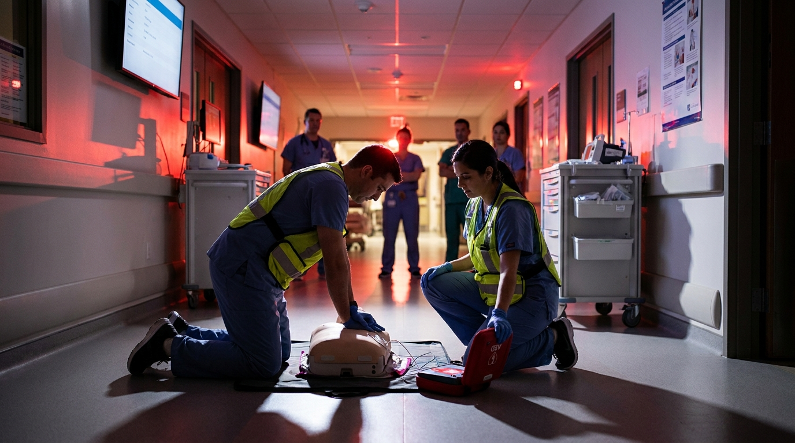

Cada año miles de personas sufren un paro cardíaco repentino fuera del hospital. En la mayoría de los casos, quien presencia el evento no sabe nadar en aguas desconocidas: actúa con las mejores intenciones, pero sin la técnica adecuada. Y en la reanimación cardiopulmonar, la diferencia entre hacerlo bien y solo hacerlo puede ser literalmente cuestión de vida o muerte.
La desfibrilación es la aplicación de una descarga eléctrica controlada sobre el tórax de una persona en paro cardíaco, con el objetivo de restaurar un ritmo cardíaco organizado. El corazón funciona como una bomba eléctrica: cuando entra en un ritmo caótico — como la fibrilación ventricular — deja de bombear sangre. La descarga eléctrica interrumpe ese caos y permite que el marcapasos natural del corazón retome el control.
Los dispositivos que hacen esto posible de forma segura fuera de un hospital son los DEA (Desfibriladores Externos Automáticos). Un DEA analiza automáticamente el ritmo del corazón y decide si es necesario aplicar una descarga. Está diseñado para que cualquier persona, sin formación médica previa, pueda usarlo correctamente.
Después de un paro cardíaco, el cerebro deja de recibir sangre oxigenada. A los 4-6 minutos empiezan a producirse daños cerebrales irreversibles. Después de 10 minutos, las probabilidades de supervivencia son prácticamente nulas.
La desfibrilación aplicada en los primeros 3 minutos tras el colapso puede duplicar las probabilidades de supervivencia. Cada minuto adicional sin desfibrilación reduce las posibilidades aproximadamente un 10%. Es una carrera contra el reloj donde cada segundo define un resultado diferente.
En México, el tiempo promedio de llegada de los servicios de emergencia médica prehospitalaria oscila entre los 13 y los 20 minutos, dependiendo de la ciudad y las condiciones del tráfico. En zonas rurales o periféricas, ese tiempo puede ser considerablemente mayor.
Esto significa que, en la mayoría de los casos de paro cardíaco extrahospitalario en México, el único recurso disponible en los primeros minutos criticales es la persona que está presente en ese momento: el testigo. Y para que ese testigo pueda actuar con efectividad, necesita saber hacer RCP de alta calidad y saber usar un DEA.
El DEA es un dispositivo portátil diseñado para que cualquier persona pueda usarlo sin necesidad de formación médica previa. Su funcionamiento sigue pasos claros:
La desfibrilación no opera sola. Forma parte de una cadena de pasos que, cumplidos en orden y sin demoras, maximizan las probabilidades de supervivencia:
El eslabón más débil de esa cadena es, en la mayoría de las comunidades, la desfibrilación temprana. Ahí es donde los segundos importan más — y donde la formación de los testigos hace la diferencia entre vivir y morir.
Absolutamente. El uso del DEA es una habilidad que se aprende en pocas horas. Los cursos de RCP + DEA de la American Heart Association están diseñados para que cualquier persona, sin背景 médico, pueda salir preparada para actuar.
En Asesores en Emergencias ofrecemos cursos-certificados que incluyen práctica con simuladores de alta fidelidad, donde puedes experimentar la toma de decisiones en tiempo real sin riesgo para nadie.
¿Quieres aprender a salvar una vida?
Conoce nuestras próximas fechas de curso RCP + DEA. Escríbenos a jperez@emergencias.com.mx o visita www2.emergencias.com.mx.